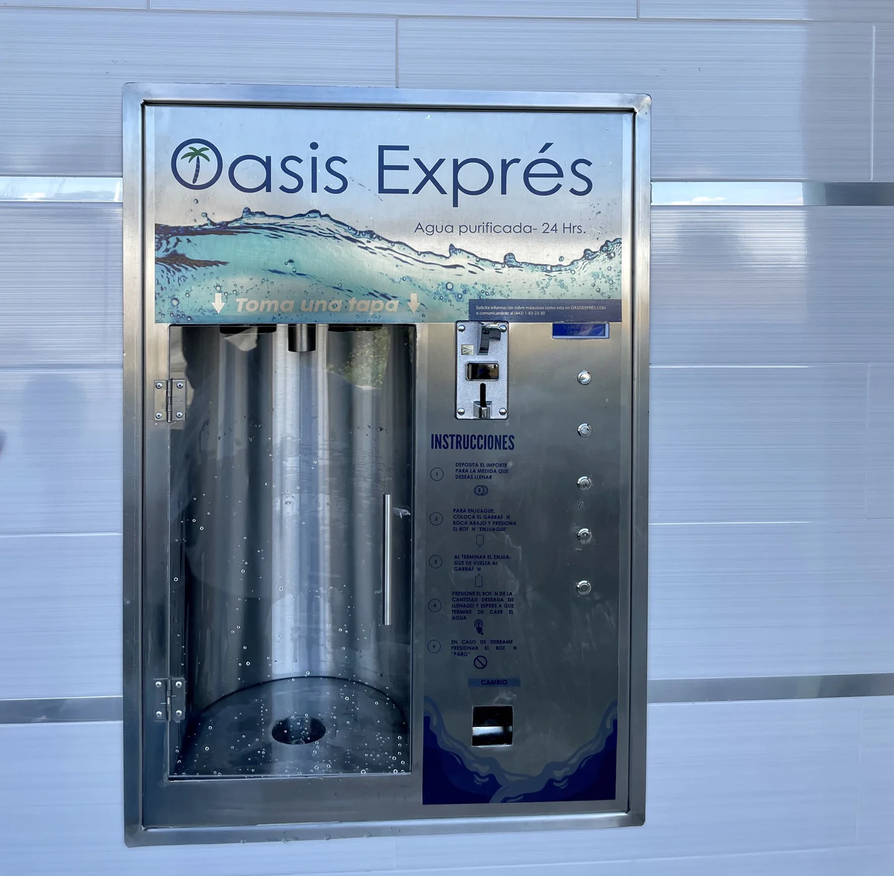

¿Quienes somos?
Bienvenido a la Purificadora de agua Gotita, su fuente confiable para obtener agua pura y segura en todo momento. En un mundo donde la calidad del agua es fundamental para la salud y el bienestar, nos enorgullece ofrecer soluciones innovadoras y efectivas que garantizan la pureza del agua que usted y su familia consumen. Nuestro compromiso con la excelencia se refleja en cada aspecto de nuestro proceso de purificación. Desde la cuidadosa selección de los mejores materiales hasta la implementación de tecnologías avanzadas, nos esforzamos por superar las expectativas y proporcionarle agua de la más alta calidad posible. Ya sea para el consumo doméstico, en entornos comerciales o comunitarios, estamos aquí para brindarle la tranquilidad que proviene de saber que su agua ha sido tratada con los más altos estándares de calidad y seguridad. Descubra cómo nuestra dedicación a la pureza del agua puede marcar la diferencia en su vida diaria.
Tu nos puedes ayudar a lograr nuestro sueño. No lo dudes mas ¡Visitanos!!!!!
Nuestro futuro
Estamos emocionados de presentar nuestro proyecto de futuro: ¡nuestras estaciones de autoservicio! Con el objetivo de hacer que el acceso al agua purificada sea aún más conveniente para nuestros clientes, estamos trabajando en la implementación de modernas estaciones de autoservicio en ubicaciones estratégicas de la ciudad. Estas estaciones estarán equipadas con tecnología de vanguardia y filtros de alta calidad, permitiendo a los usuarios llenar sus recipientes con agua purificada de manera rápida, fácil y segura. Ya sea que esté de camino al trabajo, de regreso a casa o simplemente dando un paseo por la ciudad, nuestras estaciones de autoservicio estarán ahí para satisfacer sus necesidades de agua purificada. Estamos comprometidos a continuar innovando y mejorando para brindar a nuestra comunidad opciones de acceso al agua que se adapten a su estilo de vida. ¡Manténgase atento a nuestras actualizaciones sobre la implementación de estas emocionantes estaciones de autoservicio y únase a nosotros en nuestro compromiso de proporcionar agua pura y saludable para todos!
Nuestros filtros

Nuestros filtros son la piedra angular de nuestra purificadora de agua, diseñados con la más alta calidad y tecnología para garantizar que cada gota de agua que producimos sea segura y cristalina. Utilizamos filtros de última generación que eliminan de manera efectiva impurezas, sedimentos, químicos y contaminantes del agua, asegurando un resultado final de pureza inigualable. Estos filtros están fabricados con materiales duraderos y resistentes, lo que garantiza su eficiencia a lo largo del tiempo y reduce la necesidad de mantenimiento constante. Además, ofrecemos una variedad de opciones de filtros para adaptarse a las necesidades específicas de nuestros clientes, ya sea para uso doméstico, comercial o industrial. Confíe en nuestros filtros para proporcionarle agua purificada de la más alta calidad, respaldada por años de experiencia y dedicación a la excelencia en la purificación del agua. ¡Descubra la diferencia que nuestros filtros pueden hacer en su vida diaria y únase a la creciente comunidad de clientes satisfechos que confían en nosotros para sus necesidades de agua pura!
El garafon perfecto

Los garrafones de agua desempeñan un papel crucial en la vida cotidiana, proporcionando un suministro confiable de agua potable para hogares, oficinas y diversas instituciones. Su importancia radica en su capacidad para ofrecer un recurso vital que sustenta la salud y el bienestar de las personas. La importancia de estas partes radica en su conjunto para asegurar que el agua se mantenga limpia, segura y accesible en todo momento. Los garrafones no solo son recipientes funcionales, sino que representan una fuente confiable de hidratación para comunidades enteras, contribuyendo así al bienestar y la salud pública.